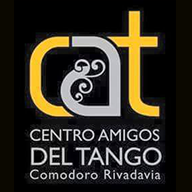

Centro Amigos del Tango
Portal para socios y panel administrativo conectados con la actividad de la institución.
Necesidad planteada
Renovar la presencia digital de la institución para mostrar sus actividades, la comisión directiva, los eventos, las clases y cómo asociarse. También se necesitaba un sistema propio para gestionar socios, cobranzas, eventos y comunicaciones, con un portal para cada socio y un back office para la comisión, conectado con la información que se publica en el sitio.

Sitio institucional y agenda
Se renovó el sitio para mostrar las actividades, la comisión directiva y los próximos eventos. El recorrido facilita asociarse, encontrar clases de tango, consultar el calendario y acceder a información útil para bailarines y socios.
Visitar el sitio y portalSocios y administración
El socio puede consultar su estado, deuda y cuota, pagar y acceder a novedades y a la agenda tanguera. La comisión directiva puede validar cobranzas, gestionar altas y bajas, realizar campañas, administrar la caja de eventos y publicar contenidos para socios o para todo el público.
APLICACIONES DEL BACK OFFICE
Qué gestiona el equipo.
Socios y cuotas
Altas, bajas, estado de socio, deuda y cuotas.
Pagos y cobranzas
Consulta de pagos en el portal y validación de cobranzas por la comisión.
Eventos y caja
Administración de eventos y de su movimiento de caja.
Comunicaciones y contenidos
Campañas, novedades y publicaciones dirigidas a socios o a todo el público.